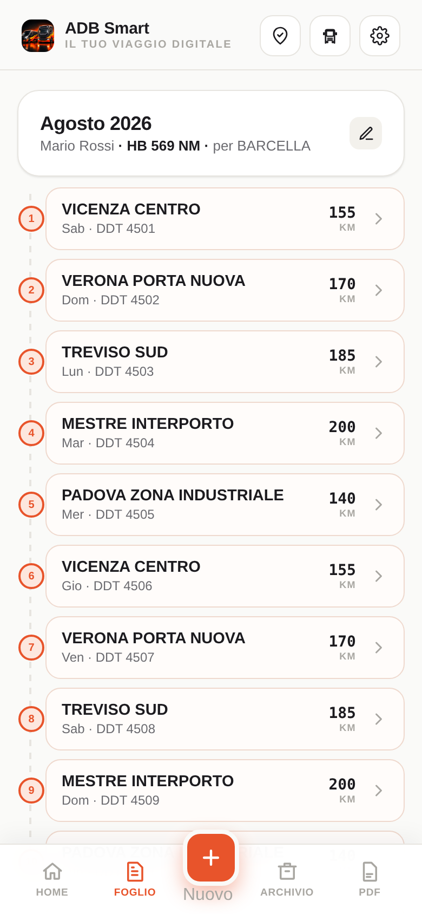
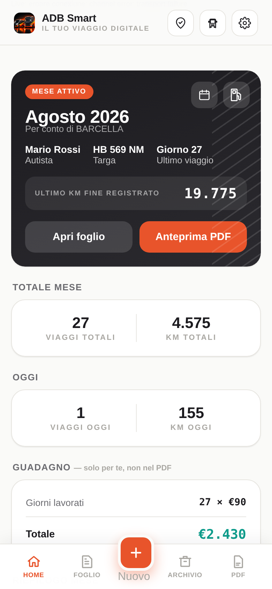
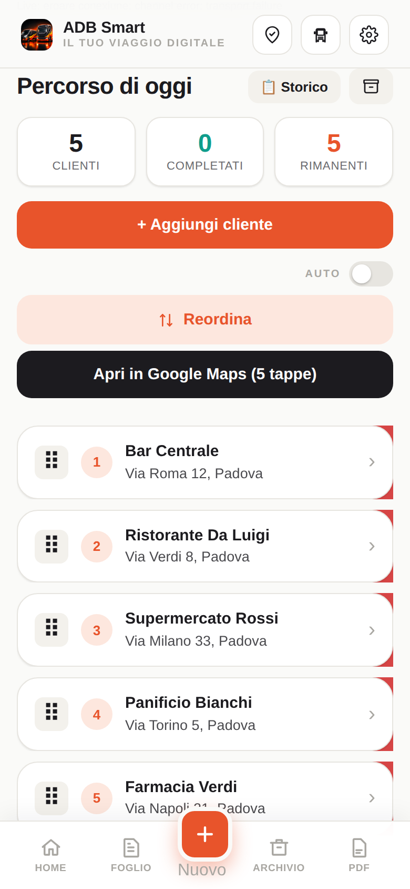
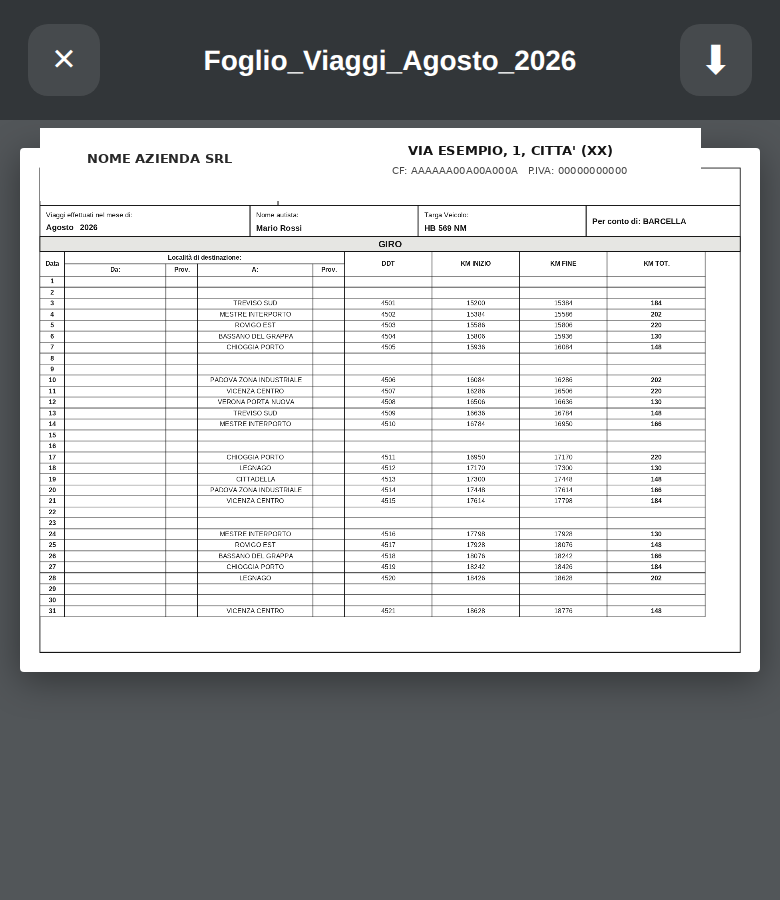
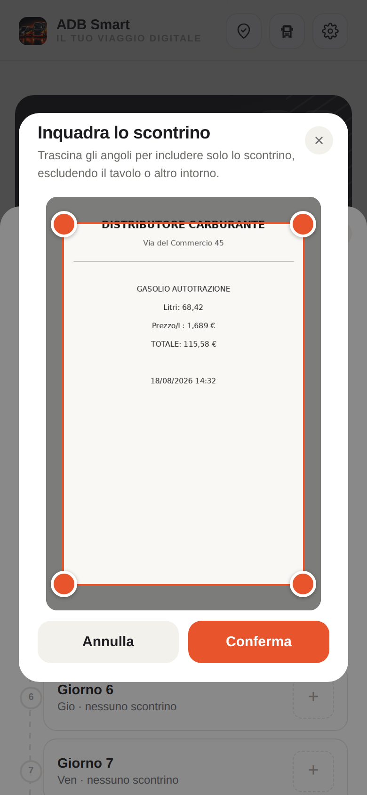

L'app pensata per autisti e camionisti professionali, foglio viaggi digitale, gestione consegne e itinerario automatico — tutto in un unico posto, sempre con te


Compila il foglio mensile in pochi secondi, ogni giorno — niente più carta, niente più calcoli a mano
Ogni km, ogni destinazione, ogni cliente — registrato automaticamente, sempre a portata di mano
Km totali, giorni lavorati, guadagno del mese — tutto visibile a colpo d'occhio, senza calcoli
Un tocco e il tuo foglio è pronto, formattato e condivisibile — per te o per chi gestisce la flotta



L'app calcola da sola l'ordine più efficiente per visitare tutti i clienti del giorno, partendo dalla tua posizione reale in quel momento — non devi decidere tu quale tappa fare prima.
Sì. Tiene traccia di km, giorni lavorativi e destinazioni, giorno dopo giorno, ed è pronto per essere esportato in PDF quando ti serve — niente più fogli sparsi o calcoli a mano a fine mese.
No. È gratis e funziona direttamente dal browser del telefono — nessun download da app store, nessuna carta di credito richiesta. Si può anche aggiungere alla schermata Home per aprirla come un'app vera.
Sì, in base ai giorni lavorativi registrati — niente calcoli manuali a fine mese.
I tuoi dati (clienti, foglio viaggi, scontrini) restano sempre salvati sul telefono, anche offline. Serve internet solo per calcolare un nuovo percorso ottimizzato.
Nessun limite artificiale sul numero di fermate — l'app gestisce l'itinerario completo della tua giornata, quanti che siano i clienti.
Gratis, senza carta di credito — installala in trenta secondi
Scarica ora — è gratis